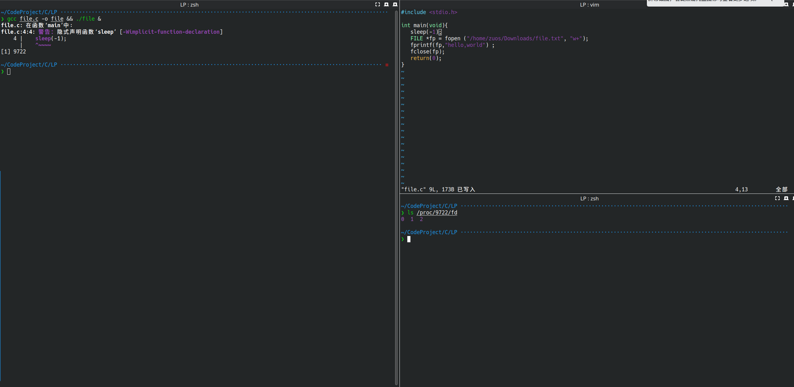
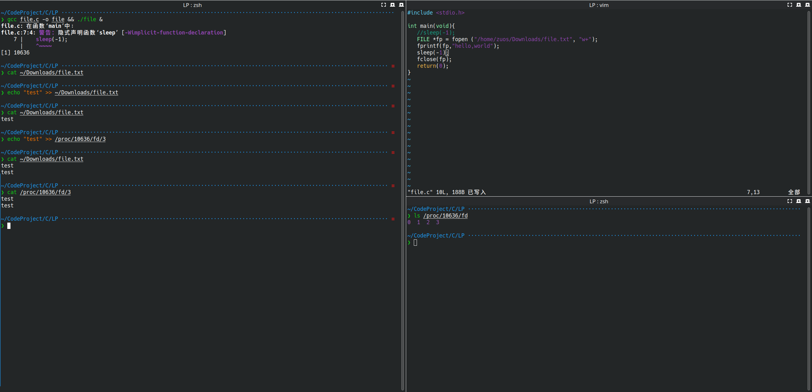

文件操作
对I/O对操作都借助于FILE这个对象，正如man-pages上对于FILE的描述（ An object type used for streams.）那样。
若要对文件内容进行修改，就需要先使用fopen()获取一个FILE对象对其进行操作。fopen函数对声明如下：
FILE *fopen(const char *restrict pathname, const char *restrict mode);
下面的这句话摘自man-pages
The fopen() function opens the file whose name is the string pointed to by pathname and associates a stream with it.
参数mode表示以什么方式打开文件，下边是man-pages中对mode各个选择对描述：
r Open text file for reading. The stream is positioned at the beginning of the file.
r+ Open for reading and writing. The stream is positioned at the beginning of the file.
w Truncate file to zero length or create text file for writing. The stream is positioned at the beginning of the file.
w+ Open for reading and writing. The file is created if it does not exist, otherwise it is truncated. The stream is positioned at the beginning of the file.
a Open for appending (writing at end of file). The file is created if it does not exist. The stream is positioned at the end of the file.
a+ Open for reading and appending (writing at end of file). The file is created if it does not exist. Output is always appended to the end of the file. POSIX is silent on what the initial read position is when using this mode. For
glibc, the initial file position for reading is at the beginning of the file, but for Android/BSD/MacOS, the initial file position for reading is at the end of the file.
fopen了一个文件并对其操作后需要fclose
这是一个简单的程序，它会在Downloads目录下创建一个file.txt，并写入hello,world。
#include <stdio.h>
int main(void){
FILE *fp = fopen ("/home/zuos/Downloads/file.txt", "w+");
fprintf(fp,"hello,world");
fclose(fp);
return(0);
}
这里可以看到fprintf的另一个用法。
在GNU/Linux系统中，文件描述符可以在/proc/<pid>/fd中看到，比如下面这样：

这里sleep(-1)函数可以让程序在那一行一直停着，方便查看/proc中进程的一些资源
&&用于连接两条指令，&将前面命令放到后台执行，其中
[1] 10636
放在后台执行对同时也告诉了用户程序对进程号
可以直接向文件描述符里面写数据，从而也就能直接写到file.txt里了。

同样，可以使用fscanf来把文件内容输出出来
#include <stdio.h>
int main(void){
char *str;
FILE *fp = fopen ("/home/zuos/Downloads/file.txt", "r");
fscanf(fp,"%s",str);
printf("%s\n", str);
fclose(fp);
return(0);
}
你会在man-pages关于fopen对mode描述中看到：
The mode string can also include the letter 'b' either as a last character or as a character between the characters in any of the two-character strings described above. This is strictly for compatibility with ISO C and has no effect; the 'b' is ignored on all POSIX conforming systems, including Linux. (Other systems may treat text files and binary files differently, and adding the 'b' may be a good idea if you do I/O to a binary file and expect that your program may be ported to non-UNIX environments.)
C语言将文件分成了两种——文本文件和二进制文件。文本文件和二进制文件自然是有区别的。